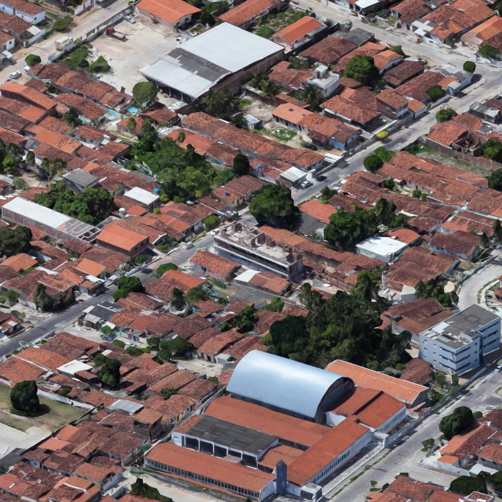
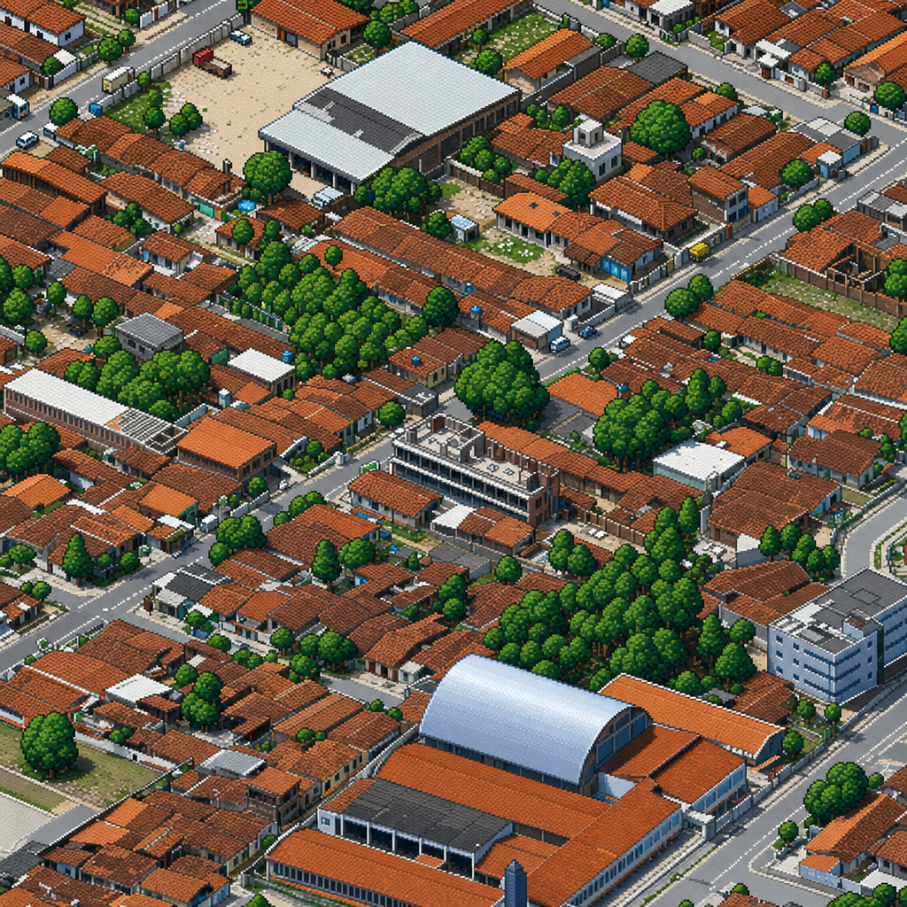
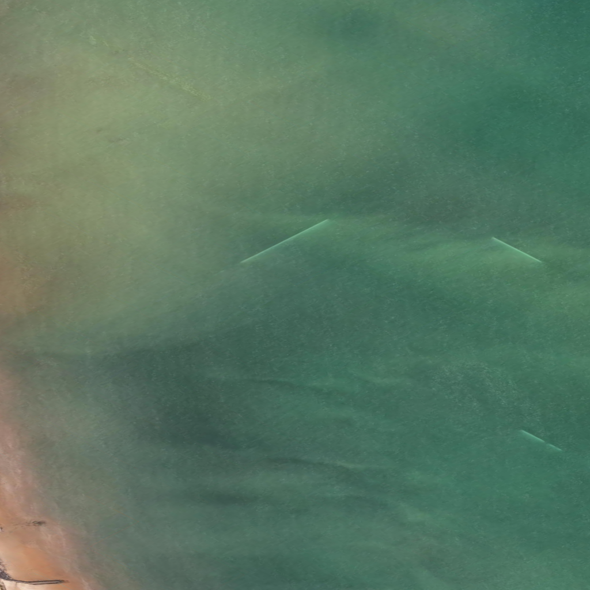
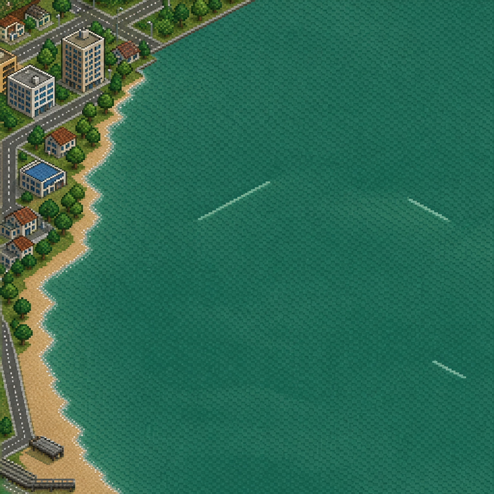

From satellite to pixel art, in six steps.
We're building a fine-tuned image model that turns 3D-rendered isometric city tiles into 16-bit
pixel art. This page walks through every kind of data the pipeline produces and why each one matters,
using actual examples from python/training/v01/.
1 · Raw renders
Captured from a Three.js scene streaming Google Photorealistic 3D Tiles, with an orthographic isometric camera. 50 random center points in the João Pessoa bounding box, each with a 3×3 neighbourhood of tiles (so neighbour-aware infill training has the data it needs later). These are the inputs to everything downstream.
Example: sample0 / c-1_r-1

2 · Stylized targets gpt-image-2
Each raw render is fed to OpenAI's gpt-image-2 (medium / auto quality) with a
detailed pixel-art prompt — SimCity 2000 / RollerCoaster Tycoon 2 / Theme Hospital aesthetic.
The output is our ground truth: what the fine-tuned model should learn to produce.
Saved alongside its source so every training example is an aligned pair.
Pair: sample0 / c-1_r-1

We're using these gpt-image-2 outputs as ground truth because they're already publishable. The point of fine-tuning is not to do better than gpt-image-2 stylistically — it's to get the same output style from a model we can self-host, run cheaply, and (most importantly) condition with masks.
3 · Cull 106 kept16 dropped
Not every gpt-image-2 output is clean. Some have hallucinated buildings, smearing, off-palette colours, or geometry that drifts from the source. We reviewed all 122 pairs side-by-side in a Streamlit app and tagged each keep or drop. Only kept pairs flow downstream.
kept sample0 / c-1_r-1
dropped sample1 / c1_r-1


87% pass rate is above Andy Coenen's Isometric NYC 40-pair recipe. The cull file is the single source of truth for what counts as "training data" in v01.
4 · Mask augmentation Andy Coenen's scheme
Here's the trick that makes a tile map seamless. We can't just train "render → pixel art" — at inference time, tiles need to fit alongside their already-generated neighbours without visible seams. So we synthesise the inference scenario: take each kept pair and produce 8 hybrid input variants where part of the image is already in pixel art (the "neighbour context") and the rest is still the raw 3D render with a 1-pixel red outline marking the region to convert.
All 8 variants for sample0 / c-1_r-1


4 half-tile variants (one side rendered, the other stylized) + 4 quadrant variants (one corner rendered, the other three stylized) = 8 variants × 106 kept pairs = 848 examples. The model learns to follow the red outline and produce a fully-stylized result that respects the surrounding context.
5 · Horizontal flip free 2×
Doubling the dataset for free. Every (input, target) pair gets a horizontally-mirrored twin — both images flipped together so they stay consistent. The isometric light direction flips from top-left to top-right, which is still a valid choice. We skip rotations because they'd break isometric camera conventions.
Original vs flip — half_R variant

6 · Manifest — what goes to oxen.ai
One CSV row per training example. Each row points at a hybrid input PNG, the prompt with the
rare-token style trigger <mapart isometric pixel art>, and the matching target PNG.
This is the file we upload to oxen.ai
together with the referenced images.
The prompt (same for every row)
Fill in the outlined section with the missing pixels corresponding to the <mapart isometric pixel art> style, removing the border and exactly following the shape/style/structure of the surrounding image.
Why this shape of data?
Three things had to be true for the final model to work:
- Style consistency across many independent tile generations. gpt-image-2 gives this through the prompt; the LoRA inherits it by training on its outputs.
- Seam-free tiling in production. The 8-variant mask scheme is what teaches the model to extend an existing pixel-art region into a rendered region — i.e. infill neighbours cleanly.
- Cheap, self-hostable inference. gpt-image-2 is too slow and pricey at the scale of a real map (thousands of tiles). A Qwen Image Edit LoRA on oxen.ai can serve at a fraction of the cost.
Reference: Andy Coenen's Isometric NYC used 40 pairs, $12, and ~4 hours on oxen.ai with this same recipe and shipped a finished map of Manhattan. We have 106 kept pairs and 1696 training examples — comfortably above his bar.